- 市場：任何使買方與賣方聚集的安排，可以是實體場所或遍布各地的買賣雙方。
- 競爭市場：存在眾多買方與賣方，任何單一個體無法影響價格。
- 需求量（Quantity Demanded）：在特定時期、特定價格下，消費者「願意且能夠」購買的數量。
- 需求法則（Law of Demand）：其他條件不變，價格上漲則需求量減少；價格下跌則需求量增加。
- 需求曲線：描述需求量與價格之間關係的圖形，向右下方傾斜。
- 需求量變動 vs. 需求變動
- 需求量變動：由商品本身價格改變引起，沿需求曲線移動。
- 需求變動：由其他因素改變引起，需求曲線整體移動（左移或右移）。
- 影響需求的因素
- 替代品（Substitute）：可相互取代的商品；替代品價格上漲，本商品需求增加。
- 互補品（Complement）：搭配消費的商品；互補品價格上漲，本商品需求減少。
- 預期未來價格、所得（正常財 vs. 劣等財）、買者人數、偏好。
- 供給量（Quantity Supplied）：在特定時期、特定價格下，生產者「願意且能夠」出售的數量。
- 供給法則（Law of Supply）：其他條件不變，價格上漲則供給量增加。
- 供給曲線：描述供給量與價格關係的圖形，向右上方傾斜。
- 影響供給因素：生產相關品價格、投入要素價格、預期未來價格、賣方人數、生產力（技術進步）。
- 均衡：需求量等於供給量時達到均衡；均衡價格是使量相等的價格。
- 市場力量法則：存在短缺時，價格上漲；存在供過於求時，價格下跌。
- 需求增加 → 均衡價格與均衡數量均增加；供給增加 → 均衡價格下降，均衡數量增加。
- 需求供給均增加 → 均衡數量增加，價格變化不確定。
- 需求增加、供給減少 → 均衡價格上漲，均衡數量不確定。
分析石油短缺、金融危機、政策（如碳稅）對市場均衡的影響。
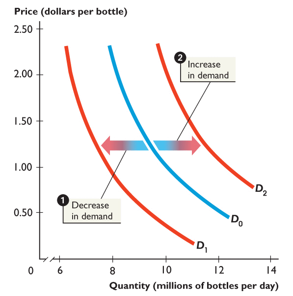
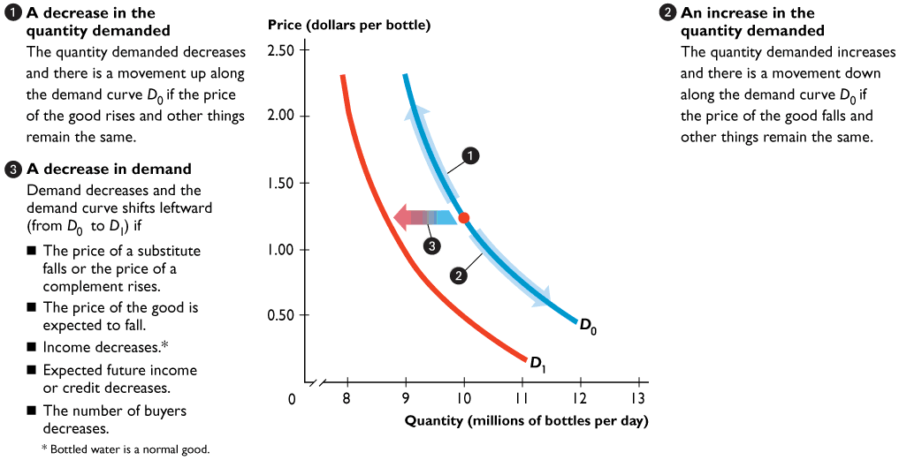
" loading="lazy">
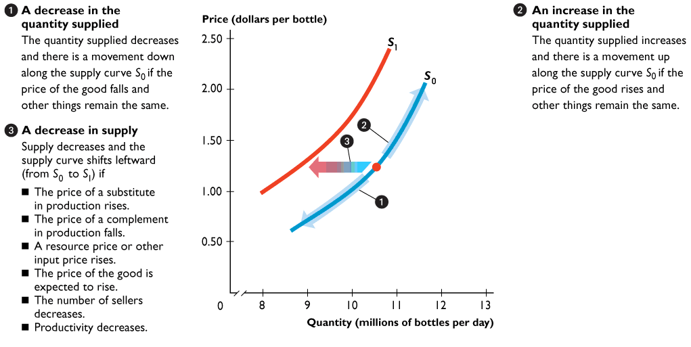
| Change in Quantity Supplied Versus Chan" loading="lazy">
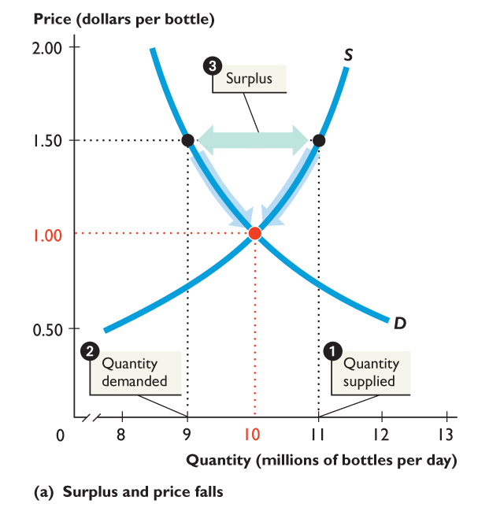
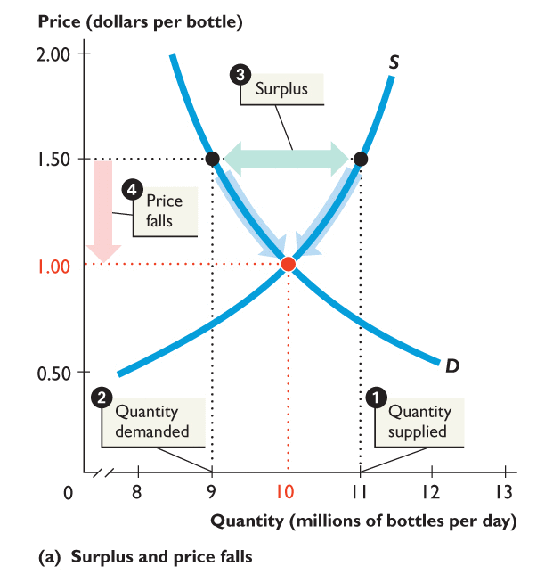
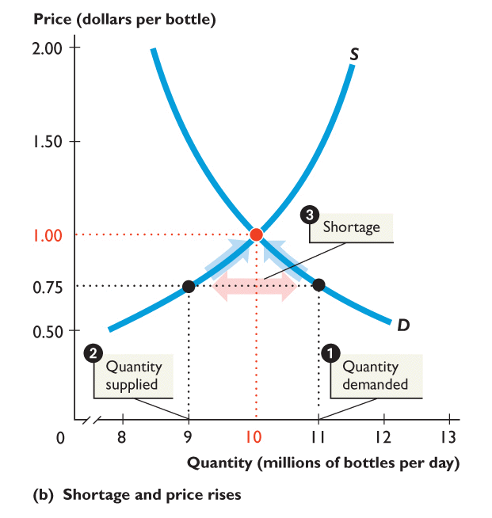
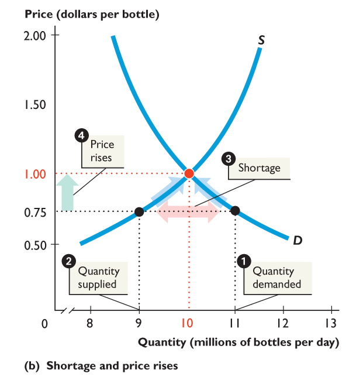
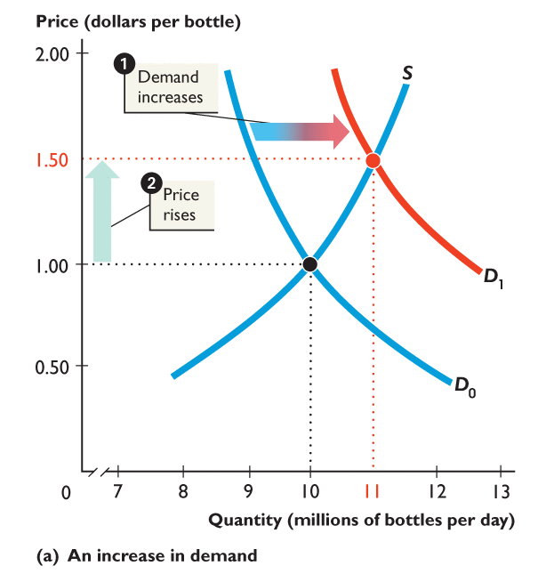
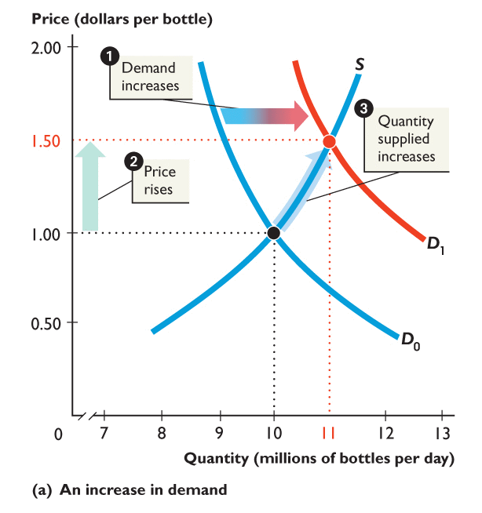
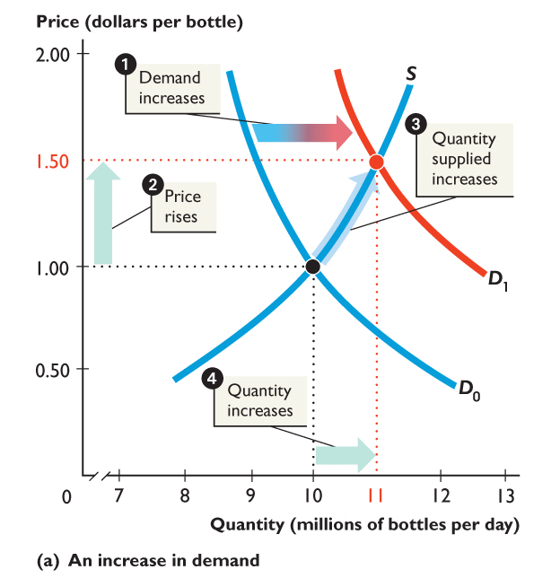
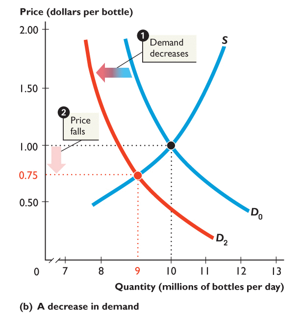
- 私人信息（Private Information）：市場上部分參與者擁有而其他人不具備的相關交易信息。
- 不對稱信息（Asymmetric Information）：買方或賣方之一擁有私人信息的情況。
當買方無法區分優良品與劣質品（檸檬，即次品）時，市場上劣質品過多，最終優良品可能從市場消失。
- 逆向選擇（Adverse Selection）：高風險者比低風險者更傾向於購買保險或進入市場。
- 解決方法：
- 信號傳遞（Signaling）：知情方透過行動向不知情方傳遞信息，如二手車經銷商提供保固（warranty）。
- 篩選（Screening）：不知情方為知情方提供揭露私人信息的誘因，如「無索賠折扣」與「自負額」。
| 均衡類型 | 說明 |
|---|---|
| 匯集均衡（Pooling Equilibrium） | 信息不對稱下，所有人支付相同保費，無法區分風險高低。 |
| 分離均衡（Separating Equilibrium） | 透過篩選機制，高風險者支付較高保費，低風險者支付較低保費。 |
- 逆向選擇：高風險者更想購買保險。
- 道德風險（Moral Hazard）：購買保險後，被保者減少謹慎行為，對保險公司造成不利。
- 解決方式：無索賠折扣、自負額（免賠額）。
- 疫苗接種具有正外部性，邊際社會效益超過邊際私人效益。
- 多數國家採公共醫療體系，政府補貼醫療保健。
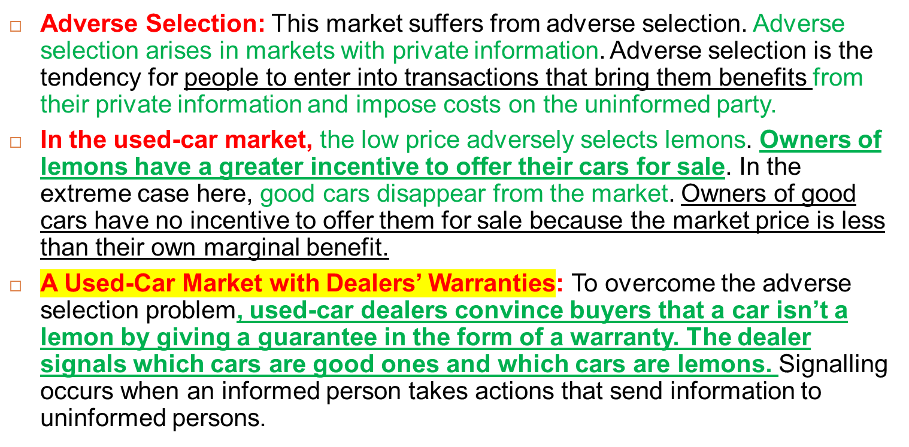
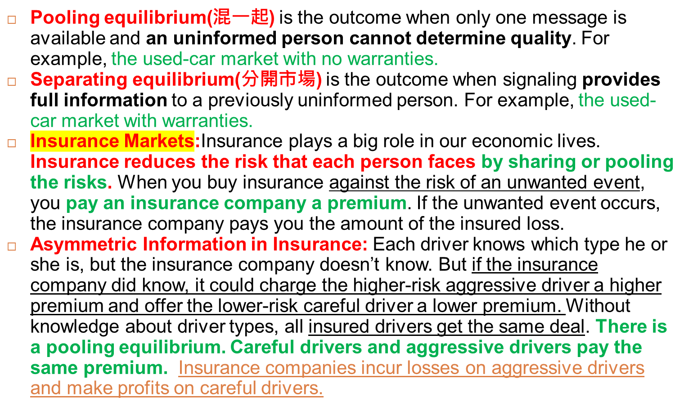
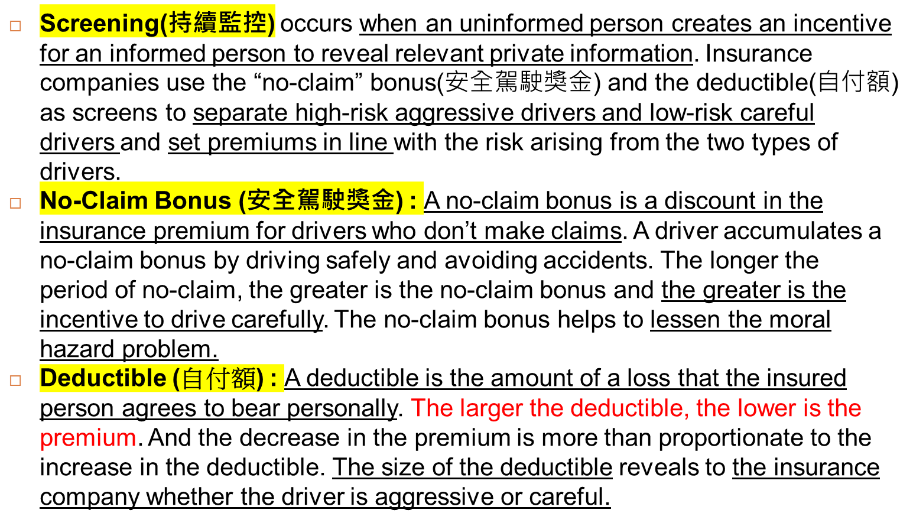
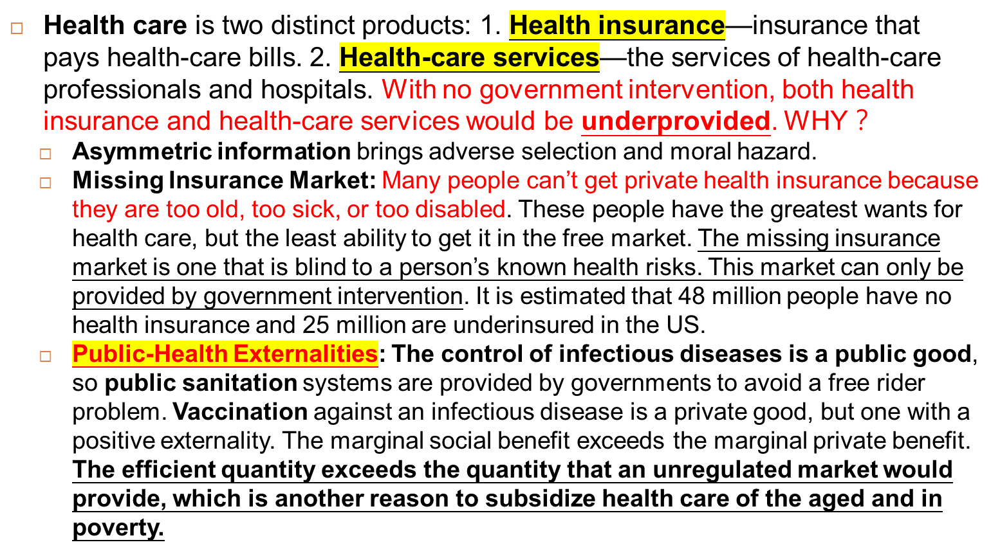
" loading="lazy">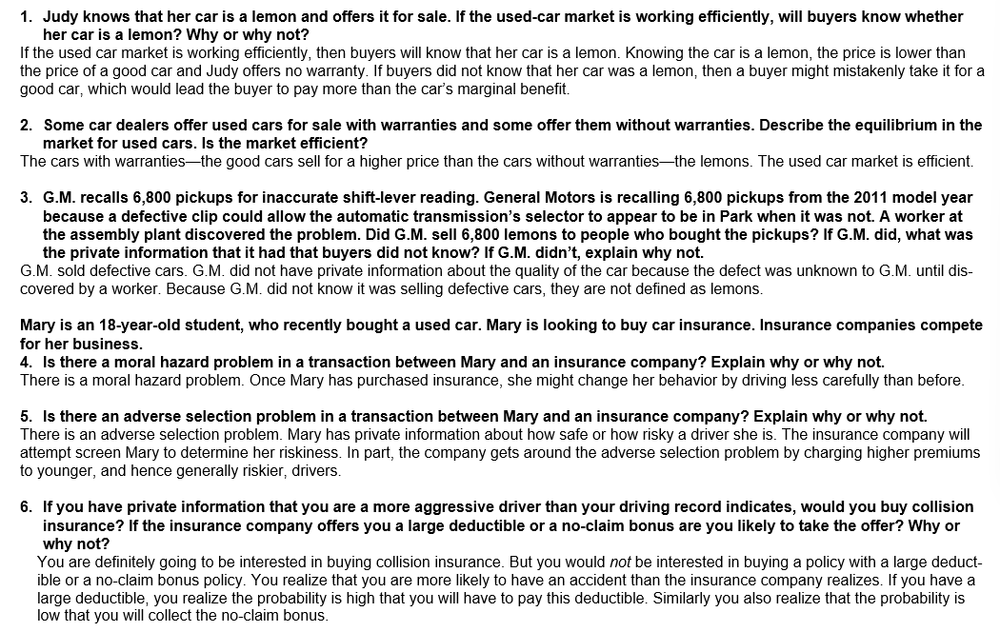
| 練習題目" loading="lazy">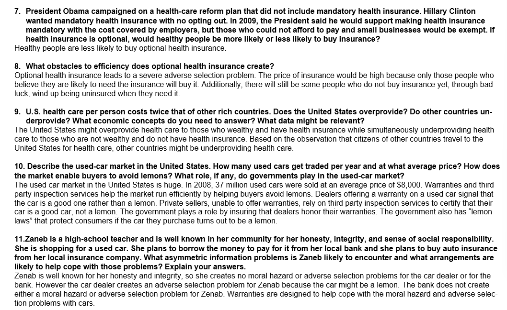
" loading="lazy">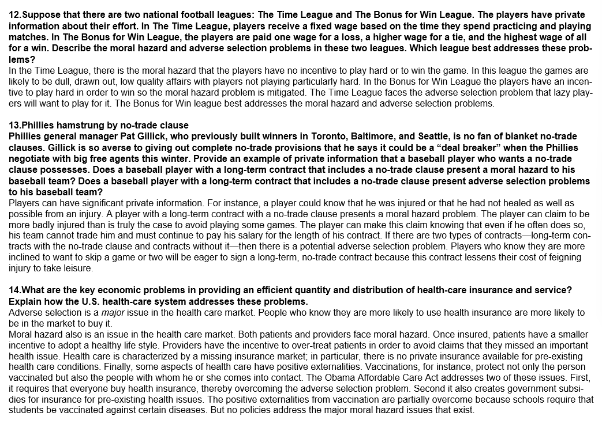
" loading="lazy">- 顯性成本（Explicit Cost）：以金錢直接支付的成本。
- 隱性成本（Implicit Cost）：不以金錢直接支付的機會成本（含經濟折舊、自有資源成本）。
- 正常利潤（Normal Profit）：企業主提供企業行為的報酬，屬隱性成本。
會計利潤 = 總收入 − 顯性成本
- 短期（Short Run）：部分生產要素固定，只有勞動可以調整。
- 長期（Long Run）：所有生產要素均可調整。
- 沉沒成本（Sunk Cost）：已發生無法回收的成本，機會成本為零，不應納入決策考量。
| 指標 | 定義 |
|---|---|
| 總產量（TP） | 給定期間內，雇用特定勞動量所生產的總數量。 |
| 邊際產量（MP） | 增加一單位勞動，總產量的增加量。 |
| 平均產量（AP） | 總產量除以勞動量，即生產力。 |
- 邊際報酬遞增：生產初期，追加勞動帶來更高邊際產量（專業化與分工）。
- 報酬遞減法則（Law of Diminishing Returns）：固定資本不變，持續增加勞動，最終邊際產量將遞減。
ATC = AFC + AVC
MC = ΔTC / ΔQ
- AFC 隨產量增加而持續下降。
- AVC 曲線呈 U 型。
- ATC 曲線呈 U 型（AFC 與 AVC 力量的結合）。
- MC 曲線呈 U 型，且穿越 AVC 與 ATC 的最低點。
- 邊際產量上升時，邊際成本下降；平均產量最大時，平均變動成本最低。
| 事件 | 移動效果 |
|---|---|
| 技術進步 | TP、MP、AP 曲線上移；AC、MC 曲線下移。 |
| 變動要素價格上升 | TC、ATC、AVC、MC 上移；TFC、AFC 不變。 |
| 固定要素價格上升 | TC、TFC、AFC 上移；AVC、MC 不變。 |
- 長期平均成本曲線（LRAC）：各產量水準下，廠商調整所有要素後的最低平均總成本。
- 規模經濟（Economies of Scale）：產量增加幅度 > 投入增加幅度，LRAC 遞減。
- 規模不經濟（Diseconomies of Scale）：產量增加幅度 < 投入增加幅度，LRAC 遞增。
- 固定規模報酬（Constant Returns to Scale）：LRAC 不變。
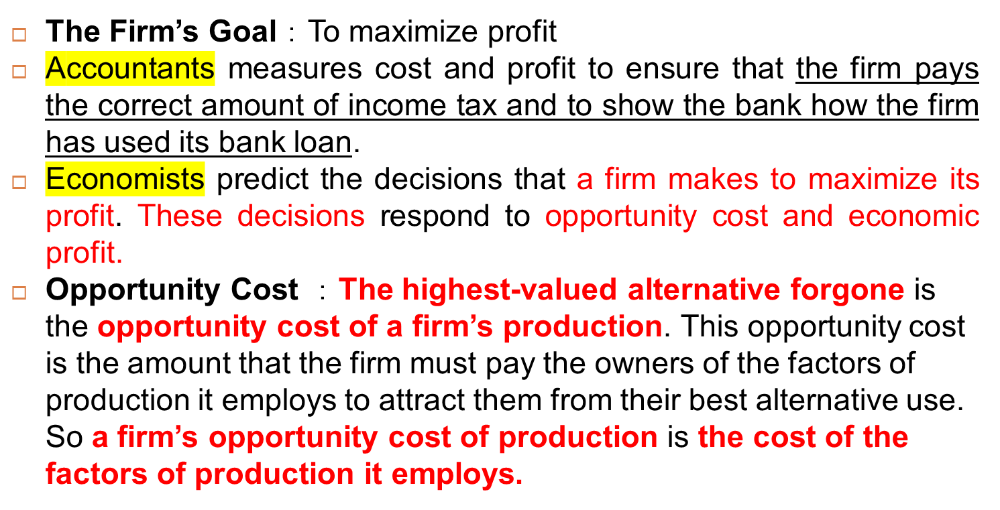
" loading="lazy">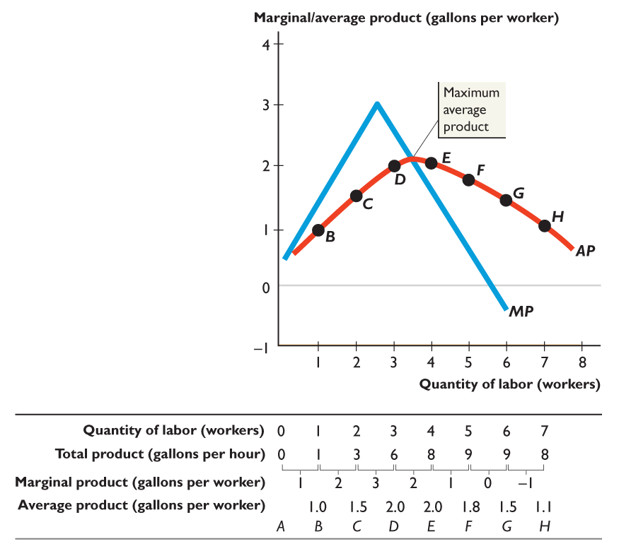
| Average pro" loading="lazy">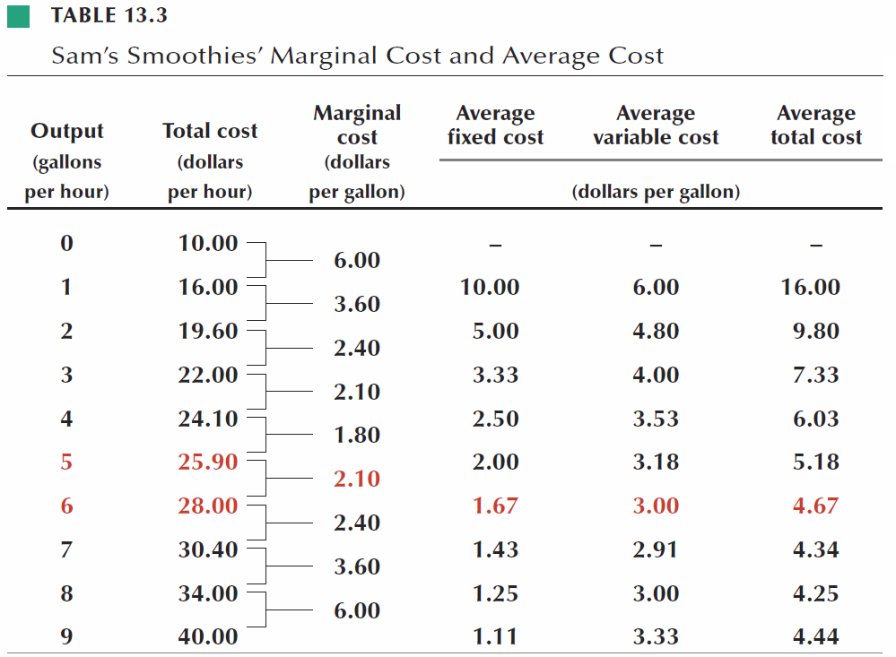
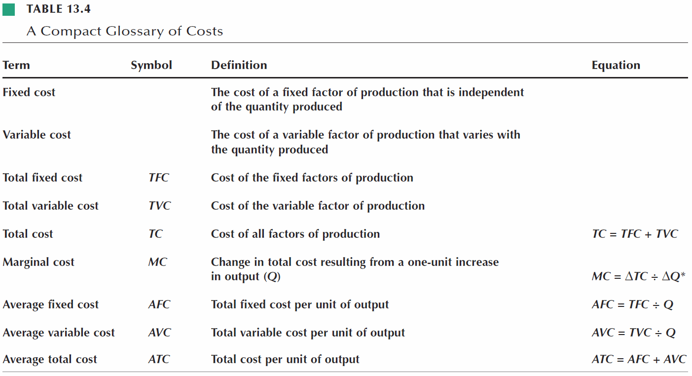
建立有系統的方法，改善政策與計畫的設計與執行，將環境因素納入經濟決策：
- 設計具有經濟理論基礎的政策與計畫
- 確定計畫或政策對社會和環境的影響
- 對環境和社會影響進行效益與成本評估
- 重新設計計畫以減少不利影響
- 社會成本效益分析（Social Benefit-Cost Analysis）：比較社會全體成員承擔的成本與享有的效益；效益 = 人類福利之改善；成本 = 機會成本。
- 成本有效性分析（Cost-Effectiveness Analysis）：不評估效益價值，僅比較不同方案達到同一目標的成本高低。
- 其他方法：環境影響評估、風險分析、環境會計等。
- 環境資源是資本、資產、存量，每年產生的服務是流量。
- 環境資源對人類的四種功能：
- 生產（Material Inputs）
- 維生（Life-Support Services）
- 舒適、寧適性（Amenity Services）
- 自淨（Assimilative Effects）
- 非使用價值（Non-Use Value）：即便不使用該資源，人們也可能因道德或關懷而賦予的價值（如瀕危物種的存在價值）。
| 概念 | 說明 |
|---|---|
| 評估範圍界定 | 依決策者層級決定「社會」範圍（中央→全國，地方→轄區） |
| 移轉性支付 | 稅收、補貼等不涉及實際資源使用，不應計入成本或效益 |
| 就業機會 | 完全就業下，增加就業非效益（有機會成本）；不完全就業下，機會成本可能為零 |
| 沉沒成本 | 機會成本為零，不納入分析 |
| 外部性 | 須估計外部成本與效益，加入內部成本效益得社會成本效益 |
| 邊際成本 | 應分析邊際成本與邊際效益，這是決策主要依據 |
| With vs. Without | 比較「有方案」與「無方案（基線）」，非 Before vs. After |
| 影子價格 | 使用經濟/影子價格，而非受扭曲的財務價格 |
- 風險（Risk）：可以衡量的不確定性，知道發生機率。
- 不確定性（Uncertainty）：發生機率完全未知，可轉換成主觀機率的風險情況。
- 敏感度分析（Sensitivity Analysis）：使用各變數最樂觀與悲觀值計算成本與效益，找出對成本效益影響最大的變數。
應避免：扭曲基線定義、忽略某些方案或成本效益、受個人價值觀與政治立場影響。
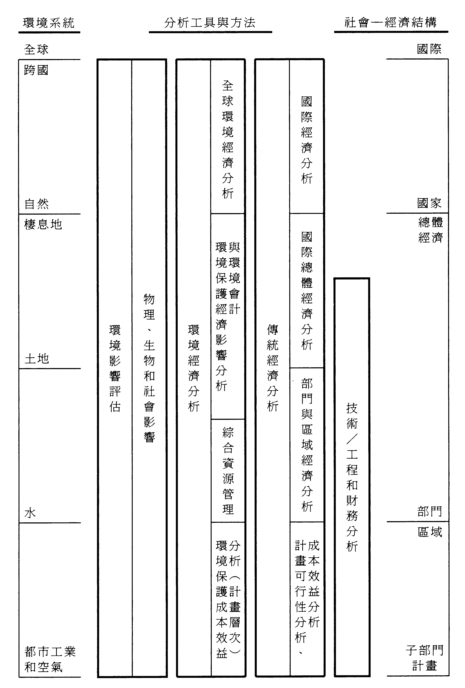
- 經濟學研究人類如何在資源有限下做出選擇；核心命題是「稀缺性」——資源有限而欲望無窮，必須做出取捨（Trade-off）。
- 任何社會都必須回答三個基本問題：生產什麼？如何生產？為誰生產？
- 環境經濟學（Environmental Economics）：將經濟學原理應用於環境議題，研究經濟活動與自然環境的關係，並以經濟手段設計解決環境問題的機制。
- 三大核心概念：
- 外部性（Externality）：經濟活動對第三方造成未反映於市場價格的影響。
- 市場失靈（Market Failure）：自由市場無法有效分配環境資源。
- 公共財（Public Goods）：環境資源具非排他性與非競爭性，易遭過度使用。
- Step 1 設計具經濟理論基礎的政策：依據福利經濟學、外部性理論、公共財理論、永續發展理論。
- Step 2 確定計劃對社會和環境的影響
- Step 3 進行效益與成本評估（CBA）：含環境效益量化方法。
- Step 4 重新設計政策以減少不利影響：
- 環境面：提高排放標準、調整環境稅率至社會邊際損害水準、設計生態補償機制。
- 社會面：收入中性的碳稅退還機制、轉型援助計劃、納入弱勢群體的參與式設計。
- 環境資源四大功能：生產投入、維生服務、舒適寧適、自淨能力。
- 存量、流量與折現價值：折現率越高，未來服務現值越低，越傾向短期開發；折現率越低，越傾向長期保育——「代際公平」因此成為核心議題。
- 總經濟價值（TEV）架構：使用價值＋非使用價值。
砍伐森林 → GDP 上升，但未扣除森林資本的損失。
工廠排污 → GDP 上升，但未計入健康與環境損害。
清污支出 → GDP 上升，但僅是「防禦性支出」，非真正的福祉提升。
| 要點 | 說明 |
|---|---|
| 評估範圍界定 | 首要步驟是明確界定「社會」範圍，由計劃決策者層級決定 |
| 移轉性支付 | 稅收、補貼、貸款返還等僅是社會內部所得重分配，不應計入社會成本或效益 |
| 就業效益 | 須正確評估，避免高估 |
| 沉沒成本 | 不應納入決策考量 |
| 外部性 | 須完整計算內部與外部成本效益 |
| 邊際分析 | 分析方案的邊際成本與邊際效益，是決策主要依據 |
- CBA 中不需要單獨預測通貨膨脹率：名目／實質兩種方式最終得到相同現值結果。
- 影子價格（Shadow Price）：應使用影子價格而非市場財務價格，以反映對整個社會的真實效益或成本。
- 核心優點：不需要知道各變數的機率分布（與期望值分析最大區別）、操作直觀、可識別關鍵變數。
- 執行步驟：
- 確認基準情境（Base Case），計算基準 NPV
- 識別關鍵不確定變數（成本、效益、折現率、計劃壽命等）
- 設定各變數的樂觀值與悲觀值
- 逐一變動各變數，計算 NPV 變動幅度
- 識別影響最大的變數，提出風險管理建議
- 環境問題的因果鏈：依課堂圖1-2「環境問題之根源與解決示意圖」梳理。
- TR / TC 模型：以總收益與總成本曲線分析環境資源的最適開採量，特別適用於漁業、林業等開放取用資源。
② 市場失靈是環境問題根本原因，政府介入需以 CBA 為科學依據。
③ 社會 CBA 須同時包含內部與外部成本效益。
④ 應使用影子價格而非市場價格。
⑤ 邊際分析是核心工具：最適點在 MB = MC 處。
⑥ 避免三大錯誤：計入移轉性支付、高估就業效益、納入沉沒成本。
⑦ 敏感度分析是識別關鍵不確定因素的基本工具。
- 差異一：決策觀點不同（私人→自身利潤；公共→社會全體福祉）。
- 差異二：分析對象不同——公共部門常牽涉非市場型態之財貨或勞務（如環境資源數量與品質改變的政策）。
- 柏拉圖最適境界（Pareto Optimality）：社會不可能在不損及某些人效用下提升其他人之效用；經濟效率指資源在生產、消費及二者結合時同時達到均衡。
- 柏拉圖改善（Pareto Improvement）：一項變動使至少一人效用提升，且無任何人效用下降。
- 柏拉圖較優（Pareto Superior）：狀態 B 比 A 較優 = 從 A 移到 B 是柏拉圖改善。
- Kaldor-Hicks 補償原則：若獲利者的利得 > 受損者的損失，獲利者「理論上」能補償受損者且仍有剩餘 ⇒ 社會淨效益 > 0 ⇒ 政策具效率正當性。可評判柏拉圖準則無法判斷的變動。
| 概念 | 內涵 |
|---|---|
| 效用可能前緣（UPF） | 給定資源與技術下，兩人效用的最大可能組合；曲線上＝柏拉圖最適，曲線內＝仍可改善，曲線外＝不可達 |
| 大總效用邊界（GUF） | PPC 上每一生產點對應一條 UPF，所有 UPF 的外包絡線即為 GUF |
| 社會最大福利 W* | GUF 上有無限多柏拉圖最適點，需以社會福利函數（SWF）等福利曲線與 GUF 的切點 E* 決定 |
Max NB = Σ Bᵢ − Σ Cᵢ
- 最大社會產出條件：MB = MC，此時社會總效益（CS + PS）最大。
- Q < Q*：MB > MC → 多生產仍有淨效益，應繼續生產。
- Q > Q*：MB < MC → 多生產反而造成損失，應停止。
- 完全競爭市場中 P = MC 自動實現此條件；市場失靈（如污染外部性）導致過度生產與無謂損失（DWL）。
- HCS、HCV、HEV 三種福利衡量指標：衡量財貨價格因計畫執行所造成改變的效果。大小關係（正常財、改善情境）：HCV ≤ HCS ≤ HEV；所得效果趨近於零時，三者近似，直接用 HCS 即可。
- 補償剩餘（CS_c）與對等剩餘（ES）：專為非市場財貨（數量固定的品質變動）設計，CS_c ≤ ES（正常財）。與 HCV/HEV 的關鍵差異：HCV/HEV 針對「價格變動」；CS_c/ES 針對「數量固定的品質變動」。
- 非市場財貨無法以需求供給曲線對應 WTP/WTA，須以其他評估方法求得（見第六～九章）。
- 效率準則（NB > 0）只回答「政策對社會整體值得嗎？」還需關注：誰得益？誰受損？何時得益？何時受損？
- 跨期分配與折現：
- 分配加權 CBA：Max NB* = Σ wᵢBᵢ − Σ wⱼCⱼ，其中弱勢群體 w > 1、高所得群體 w < 1，使淨效益計算更能反映社會公平偏好。
- 經濟學對污染防制成本採用「機會成本」為概念。
- 完全競爭市場下，機會成本等於市場價格；不完全市場下則不等。
| 成本種類 | 說明 | 公式 |
|---|---|---|
| 固定成本（FC） | 不隨防制量改變的成本（如設備、土地） | — |
| 變動成本（VC） | 隨防制量增加而增加的成本（耗材、藥品、水電） | — |
| 總成本（TC） | 全部防制成本 | TC = TFC + TVC |
| 年防治資本成本 | 資本成本年化 | 防治資本成本 × 資本還原因子（CRF） |
| 年總成本 | — | 年防治資本成本 + 年防治變動成本 |
應減少多少污染量？→ 在「邊際效益 = 邊際成本」處決定最適防制量
- 社會邊際防制成本曲線（MSC）：將所有個別污染源的邊際防制成本曲線水平加總。
- 除污染源防制成本外，尚須包含政府行政成本。
| 情境 | 建議政策工具 |
|---|---|
| MC 斜率較小（MB 斜率較大） | 選擇數量政策（管制排放量）→ 減少社會福利損失 |
| MC 斜率較大（MB 斜率較小） | 選擇價格政策（費率/稅率）→ 減少社會福利損失 |
- 民國84年開徵空污費，第一階段針對硫氧化物（SOx），隨燃料油徵收。
- 第二階段擴大至 SOx、NOx、粒狀污染物（Particulate）、揮發性有機物（VOC），隨排放量徵收。
- 台灣大排放源數量少，但排放量佔總量比例高（如粒狀物前234家佔89.5%總排放量）。
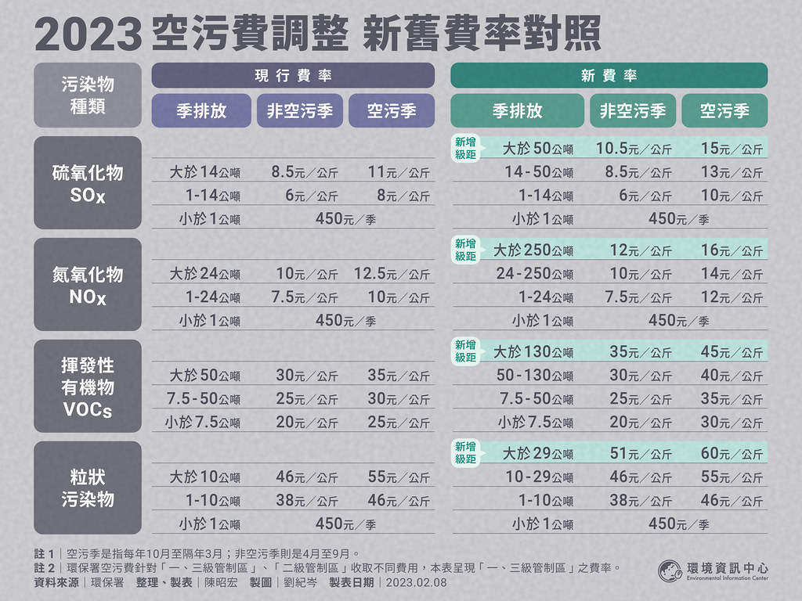
- 計畫相關之成本與效益項目的認定
- 成本與效益的衡量方法
- 成本與效益現值的計算（折現）
- 成本與效益比較後的計畫選擇準則
- 有市場價格的財貨：以市場價格為衡量依據。
- 無市場價格的財貨：須倚賴非市場評估方法（Non-Market Valuation）。
- 計畫之實質直接效果以「消費者剩餘」與「生產者剩餘」表示。
- 貨幣效果（次要效果）：由市場相對價格改變引起的重分配效果，不應重覆計算。
- 現在的成本或效益比未來的更重要。
- 折現率正值的理由：反應人們對時間的偏好（Time Preference）；代表資本的生產力（Productivity of Capital）。
- 高折現率 → 鼓勵投入較多資源於短期、高效益計畫；對未來世代差別待遇較大。
- 低折現率 → 傾向選擇長期效益較大的計畫。
- 建議：若效益延續百年以上，應採用低於1%折現率；效益發生於短期則應大於1%。
| 指標 | 說明 | 接受條件 |
|---|---|---|
| 淨效益現值（NPV） | 未來所有效益現值 − 所有成本現值 | NPV > 0 |
| 益本比（B/C Ratio） | 效益現值 / 成本現值 | B/C > 1 |
| 內部報酬率（IRR） | 使 NPV = 0 的折現率 r* | IRR > 市場利率 |
| 面向 | 成本有效性分析 | 成本效益分析 |
|---|---|---|
| 效益評估 | 由決策者判斷 | 由分析者完成 |
| 分析重點 | 技術效率（最低成本達標） | 經濟效率（效益與成本均衡） |
| 適用時機 | 不知道目標的貨幣價值 | 需比較不同方案的整體效益 |
階段二：汙染濃度 → 劑量反應函數（Dose-Response Function） → 對人類之效果
階段三：對人類效果 → 效益函數（Benefit Function） → 以貨幣單位衡量效益
需要三種跨學科知識的整合：自然科學知識、介面知識（生物醫學、農學等）、價值的經濟意義。
| 汙染類型 | 污染源分類 |
|---|---|
| 空氣汙染 | 固定污染源（工廠、煙囪）；移動污染源（汽機車） |
| 水汙染 | 點源（工業廢水、汙水處理廠）；非點源（農地逕流、建築工地） |
- Streeter-Phelps 模式：模擬溶氧（DO）與生化需氧量（BOD）在河川中的變化（氧垂曲線）。
- 高斯擴散模式（Gaussian Plume-Dispersion Equation）：預測特定地點在特定排放與大氣條件下的汙染濃度。
- 排放量轉換函數（ETF）：將某地排放量資訊轉變為對另一地環境品質的影響。
| 估計方法 | 說明 | 優缺點 |
|---|---|---|
| 實驗室法 | 以動物實驗推估 | 無法直接對人體實驗，動物與人體差異大 |
| 流行病學法（Epidemiology） | 從現實生活取樣 | 可考慮人對汙染物的趨避調整行為 |
| 健康生產函數法 | 將健康視為須支付成本的「財貨」 | 較能反映複雜的消費者決策行為 |
- 門檻效果（Threshold）：汙染濃度低於某門檻時，對人體無顯著影響。
- 邊際排放減量成本（MERC）：降低污染排放的邊際成本。
- 邊際防治效益（MBC）：不同環境品質下的邊際效益。
- 最適防治量：MERC = MBC 之處。
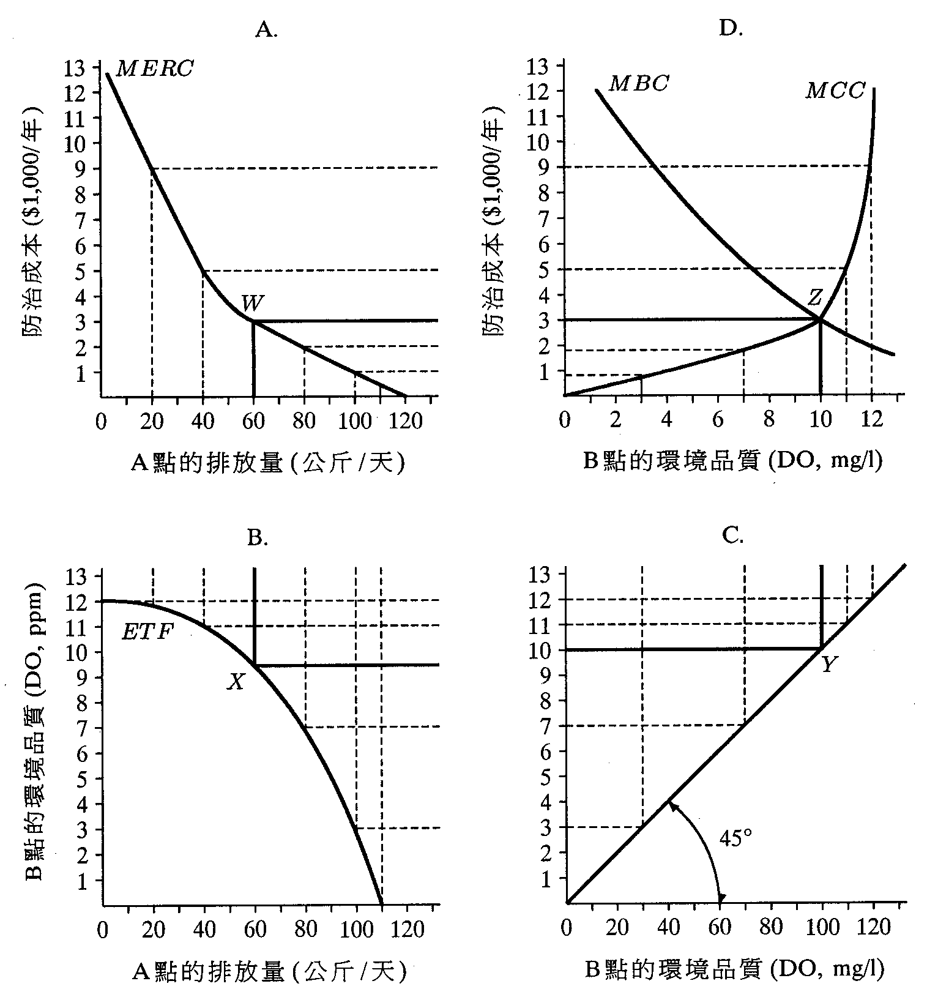
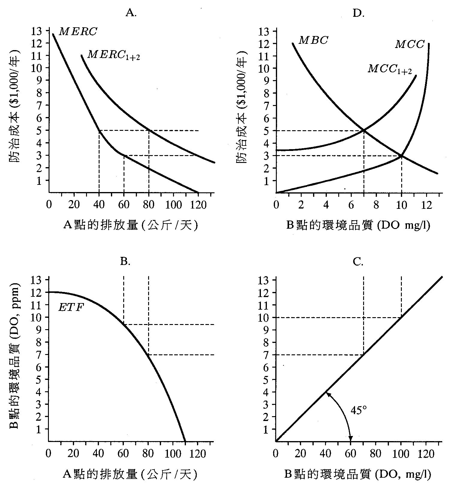
當環境品質改善或惡化，影響到市場產品的生產量或消費量，可以直接引用市場財貨資訊（供給、需求、價格、數量）來評估福利變動。
y：市場財貨數量或品質；EQ：環境品質；X：影響 y 的其他因素向量
| 函數類型 | 適用對象 |
|---|---|
| 物質損害函數 | 不具生命的市場財貨（如材料損壞） |
| 劑量反應函數 | 具有生命的市場財貨（如農作物、人體健康） |
| 生產函數 | 描述投入因素與產出量的關係，將環境品質視為生產投入之一 |
- 適用情況：缺乏市場需求或供給資訊；經濟個體行為未因環境品質變動而改變；時間緊迫。
- 產值變化、所得變化
- 替換成本（Replacement Cost）：以替換受損資產的成本估計損害
- 預防性支出（Preventive Expenditure）
- 重置成本（Restoration Cost）
| 面向 | 說明 |
|---|---|
| 優點 | 簡單直接，有可觀察的市場資料 |
| 缺點 | 常有低估之虞（不含消費者剩餘的全部）；若市場價格存在扭曲（補貼、稅、外部性），需調整 |
共同假設：弱互補性（Weak Complementarity，WC）— 消費者若不消費與環境財有關的私有財貨，則其對該環境財的邊際效用等於零。
理論基礎：以旅行成本替代財貨價格，從不同地區旅客因距離不同而支付不同旅行成本，建立旅遊需求函數。
- 蒐集個別民眾至旅遊地點的旅遊次數、旅行成本、社經變數。
- 以旅遊次數為應變數、旅行成本與社經變數為自變數進行迴歸分析。
- 由旅遊需求曲線計算消費者剩餘即為遊憩效益。
- 重要課題：應變數選擇（VPA vs. V/POP）、多重目的旅遊處理、時間價值計算、樣本選擇偏誤。
- 限制：TCM 只能推估使用價值，無法評估非使用價值。
基本概念：環境品質是房屋特徵之一，透過觀察房價的環境溢價，間接推估環境財貨的福利價值。
S：結構特徵（房屋大小、格局）；N：鄰近地區特徵；Q：環境品質特徵（空氣品質、噪音）
- 估計特徵價格函數（Hedonic Price Function）
- 計算消費者對特定環境品質的邊際隱含價格（MIP）── 特徵價格函數對環境品質變數的偏微分
- 估計對環境品質特徵的需求函數
基本概念：透過工資風險貼水（Risk Premium）反映工人對工作安全的願付價值，常用於評估因環境因素造成的死亡風險改變之價值（統計生命的價值，VSL）。
環境品質惡化時，民眾增加「避免支出（Averting Expenditure，AE）」來預防負面影響；若 AE 與環境品質間具完全替代關係，可利用 AE 變化推估福利變動。
選擇方法時須考量研究目的、理論基礎、資料需求、經費限制。
- Ciriacy-Wantrup（1952）首提透過問卷直接詢問消費者對非市場財貨的願付價值。
- Davis（1963）最早將 CVM 應用於衡量環境財效益。
- 1970年代中期開始廣被應用。
- 使用時較不受現有資料限制。
- 可同時估算使用價值與非使用價值（最大優點）。
- 可進行現場與非現場調查。
- 調查方式靈活（電話、郵寄、親自面訪）。
- 建立假設性市場（Hypothetical/Contingent Market）：描述交易財貨的數量、品質變化、支付方式等。
- 詢問願付價值（WTP）或願意接受補償（WTA）
- 進行試訪（Pilot Test）與焦點團體（Focus Group）
- 選擇詢價方式
- 估計平均 WTP/WTA 與出價函數（Bidding Function）
- 加總資料求取社會總 WTP/WTA
| 方式 | 說明 |
|---|---|
| 開放式詢價法 | 直接請受訪者填寫 WTP/WTA，方便但難以定價 |
| 逐步競價法（Bidding Game） | 從起始金額逐步調高/低，至受訪者停止變動為止 |
| 支付卡法（Payment Cards） | 提供一系列金額供受訪者選擇 |
| 封閉式（投票式）詢價法 | 僅詢問是否願意支付某特定金額（Yes/No），最接近實際購買行為，近年應用最廣 |
| 偏誤類型 | 說明 | 解決方法 |
|---|---|---|
| 策略性偏誤 | 受訪者搭便車，刻意高報或低報 | 排除極端值、強調他人支出確定 |
| 假設性偏誤 | 假設情境與現實差異導致回答不精確 | 讓假設市場更貼近現實；NOAA建議以50%修正估計值 |
| 起始點偏誤（拋錨效果） | 起始金額影響受訪者最終出價 | 使用封閉式詢價 |
| 預算限制偏誤 | WTP超過對特定環境財的真實願付金額 | 問卷提醒預算限制 |
| 訊息偏誤 | 受訪者依先入觀念作答 | 提供充分客觀訊息 |
| 支付工具偏誤 | 支付工具選擇影響出價 | 選用熟悉且符合實際的支付工具 |
| 訪員偏誤 | 訪員解說影響受訪者回答 | 訓練訪員，使用說明卡 |
| 埋藏偏誤（Embedding Bias） | WTP受問卷中財貨順序影響 | 注意問卷設計順序 |
· 提醒受訪者環境財之替代財資訊。
· 採用二分選擇（Yes/No）詢價方式。
· 樣本回答率至少達 70%。
· 採用親自面訪調查方式。
· 詢問最大 WTP 而非最小 WTA。
· 因假設性問題可能高估真實 WTP，應乘以 0.5 修正。
| 方法類別 | 直接法 | 間接法 |
|---|---|---|
| 顯示性偏好法（Revealed Preferences，RP） | 市場價格法、模擬市場 | 旅行成本法（TCM）、特徵資產價值法、趨避支出法 |
| 陳述性偏好法（Stated Preferences，SP） | 條件評估法（CVM） | 條件排序法 |
- 實際成本法：直接投入成本總和
- 機會成本法：放棄其他用途的最大價值（如將國有林地轉為遊樂用途所放棄的木材收益）
- 影子價格法：無市場價格的財貨估算價值
| 方法 | 判斷準則 |
|---|---|
| 淨現值法（NPV） | NPV > 0 則該計畫可接受 |
| 內在報酬率法（IRR） | r > 市場利率則計畫有利 |
| 益本比法（B/C Ratio） | B/C > 1 計畫有利，常用於公共事業投資決策 |
- 以旅行成本（X）與遊客人數（Y）建立需求曲線。
- 選擇函數型式（如 Y = a + bX + cX²）。
- 以最小平方法（OLS）或最大概似法（MLE）估計參數。
- 計算消費者剩餘、最大收入對應的門票價格等。
預測由住宅區 i 至遊憩區 j 的旅遊次數，考量各遊憩區間的相對品質與旅遊成本。
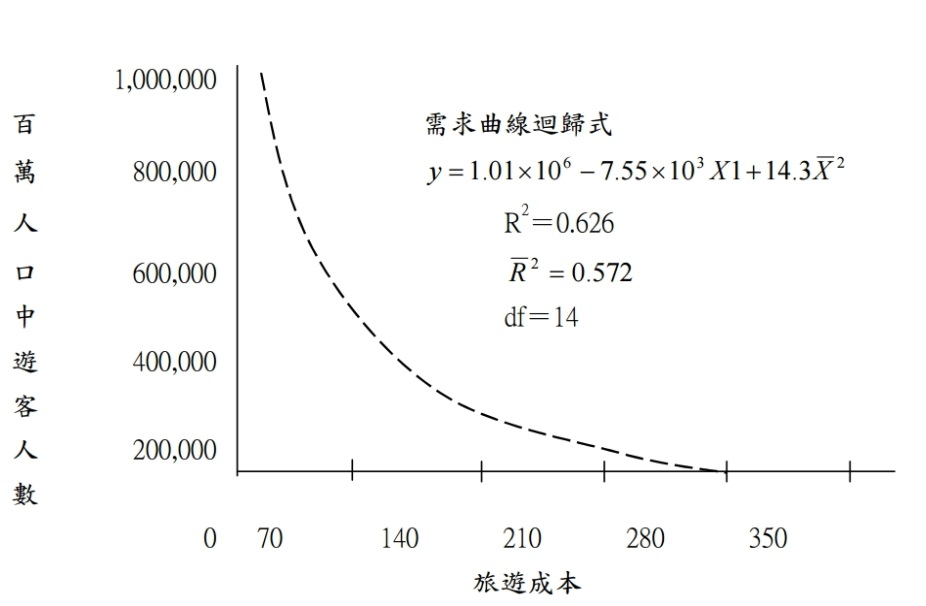
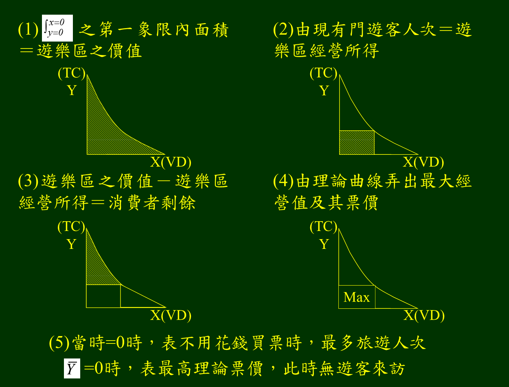
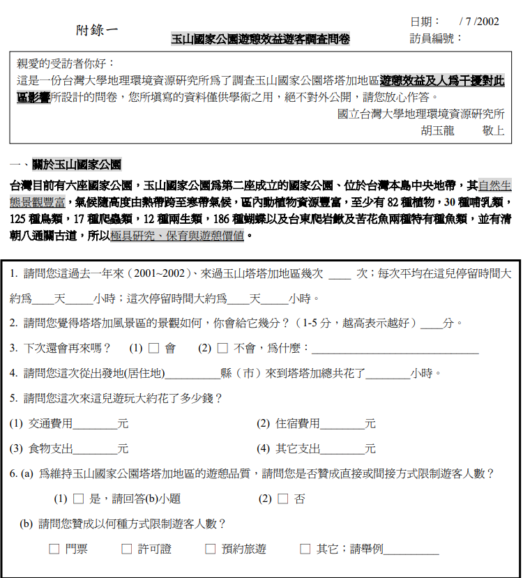
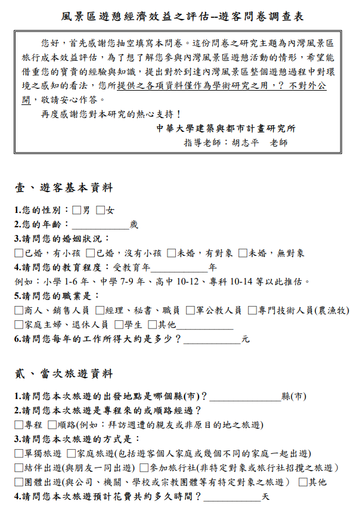
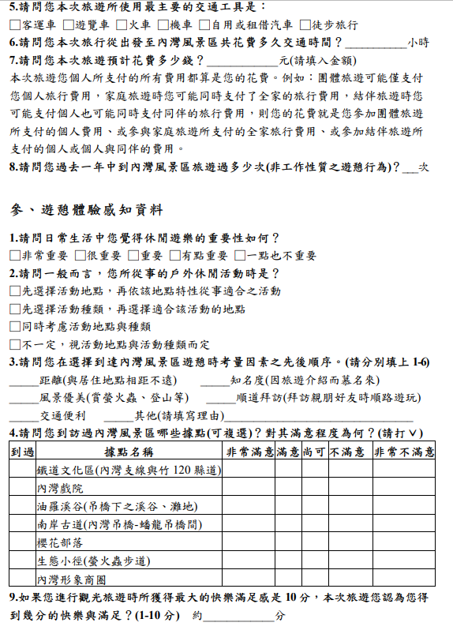
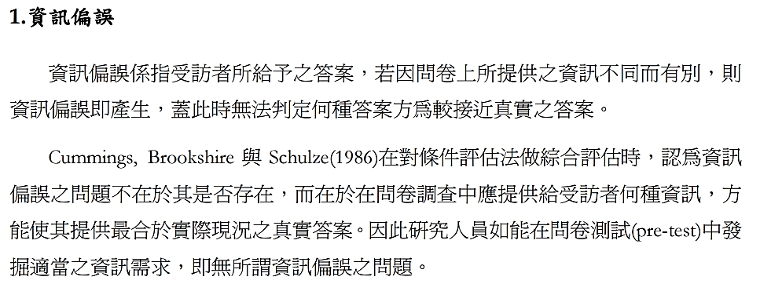
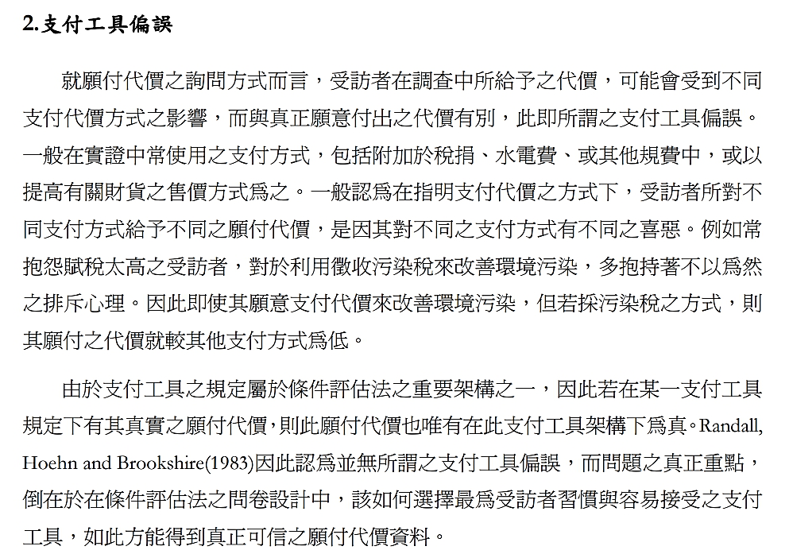
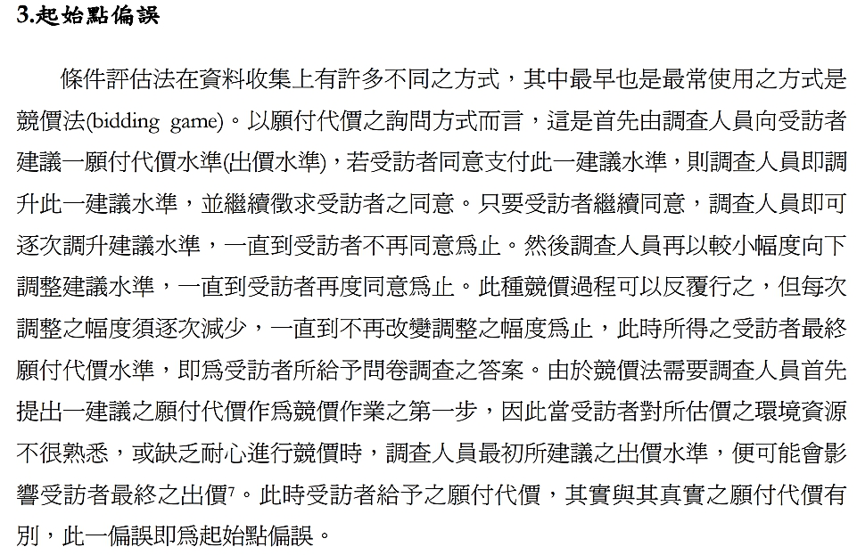
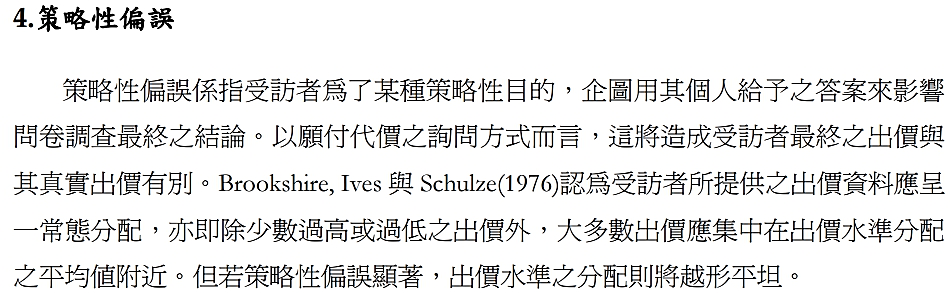
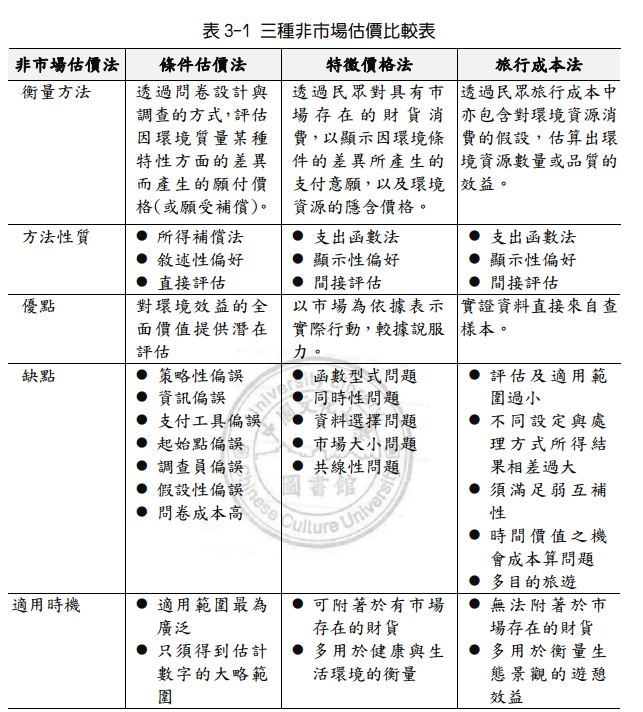
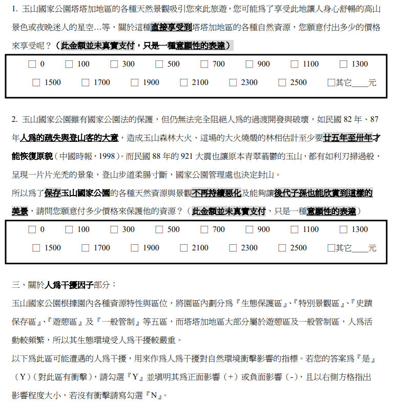
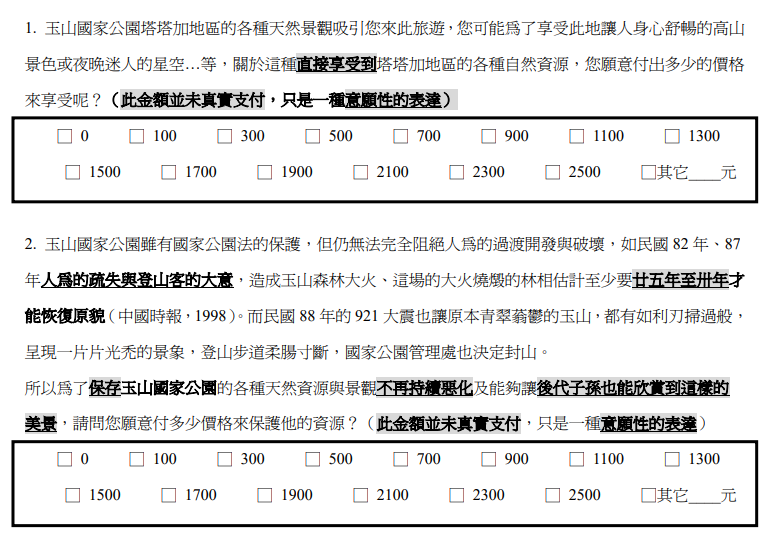
- 效益移轉法：引用他處已證實的數據，呈現研究主題特定環境品質或功能的經濟效益與成本。
- 研究點（Study Site）：引用出處的原始評估地區。
- 政策點（Policy Site）：移用效益評估結果的目標地區。
- 時間、經費、人事不足，無法進行完整調查。
- 研究點與政策點極為類似（地理、人口、環境品質、政策性質）。
- 篩選文獻：環境品質變動型態與量應與政策點類似；確認文獻統計數據、理論基礎、實證方法的嚴謹性。
- 決定移轉方式：單位平均值移轉；調整後的單位平均值移轉（考量所得水準差異等）；移轉供給或需求函數（最嚴謹）。
- 計算政策點之效益或成本值
- 計算總現值
- 依賴高品質文獻，偏遠地區或發展中國家可取得文獻有限。
- 全新政策措施可能無適用的研究點。
- 研究點與政策點之差異（所得水準、環境品質、文化獨特性）可能造成移轉偏誤。
- 研究者主觀判斷增加困難度（如政策措施影響範圍的界定、人口母體選取範圍）。
廠商可能採用的三種防治方法：
- 事前處理：降低投入原料中的汙染成份（如降低燃料含硫量）
- 改變生產製程：以較少污染方式生產
- 加裝防治設備（End-of-Pipe）：如靜電集塵器（粒狀物）、脫硝設備 SCR（氮氧化物）
資本成本 = 直接防治資本成本 + 間接防治資本成本
| 設備 | 粒狀物 | SOx | NOx | CO | VOC |
|---|---|---|---|---|---|
| 脈動噴射式袋屋 | 97% | 0 | 0 | 0 | 0 |
| 靜電集塵器（ESP） | 99% | 0 | 0 | 0 | 0 |
| 濕式排煙脫硫 | 55% | 80% | 0 | 0 | 0 |
| 選擇性觸媒還原（SCR） | 0 | 0 | 90% | 0 | 0 |
| 觸媒焚化爐 | 0 | 0 | 0 | 98% | 98% |
| 固定床吸附式設備 | 0 | 0 | 0 | 0 | 90% |
- 工程模擬法（Engineering Simulation）：利用工程公式（如 Cobb-Douglas 成本函數）估計設備成本。
- 迴歸與計量經濟分析（Econometric Method）：估計成本函數 C = f(PX, Q)；常用函數形式：Cobb-Douglas、CES、Translog。
- 線性規劃（Linear Programming）
- 總體計量方法（Macro-Econometric Models）：如 Jorgenson-Wilcoxen 模型
- 因疾病的醫療支出（含就醫時間的機會成本）
- 疾病期間無法工作所損失的工資
- 趨避、預防行為的支出
- 罹病的痛苦與減少休閒活動的負效用
- 生命期望值的改變與提早死亡的風險
- 死亡（Mortality）：死亡機率的改變（條件機率改變量）。
- 罹病（Morbidity）：因疾病或傷害導致身體或心理偏離正常狀態。
ΔD：死亡風險的邊際改變量；WTP：對降低此死亡風險的邊際願付價值
| 評估方法 | 說明 | 缺點 |
|---|---|---|
| 人力資本法 | 個人價值 = 產出價值（工資） | 與福利經濟學理論相悖 |
| 特徵工資法 | 利用工資風險貼水推論 VSL | 需認知風險與客觀風險一致 |
| 趨避行為法 | 觀察安全設備消費的邊際成本 | 容易低估（有/無決策、聯合產出問題） |
| 特徵資產價值法 | 高低污染區房價差異 | 需個人充分認知風險 |
| CVM | 直接詢問對風險降低的 WTP | 假設性問題的局限 |
S：健康狀況；E：汙染暴露量；A：趨避行為；P：空氣品質；M：減輕行為
| 評估方法 | 涵蓋範圍 | 備注 |
|---|---|---|
| 疾病成本法（COI） | 薪資損失 + 醫療支出 | 低估，未含趨避支出與效用損失 |
| 趨避行為法 | 疾病成本 + 趨避支出 | 罹病的私人成本 |
| CVM | 趨避支出 + 時間損失 + 罹病負效用 | 最完整，包含不可觀測部分 |
- 蕭代基等（1993）在台北、台北縣永和、高雄、花蓮等五地進行調查。
- 個別管制 PM₁₀、SO₂、O₃ 各50%，可降低台北罹病率0.24%、0.27%、0.086%。
- 同時降低三種污染物效果大於個別加總（存在交互作用）。
- WTP 估計：一天兩症狀疾病的願付價值約 17-70 美元。
- 台北地區受訪者 WTP 最高，台中次之，高雄最低。
| 類型 | 例子 |
|---|---|
| 陸域生態系 | 森林、草原、沙漠 |
| 水域生態系 | 沼澤、湖泊、溪流、海洋 |
- 直接影響：空氣汙染成份直接造成生物死亡、降低生長及生存能力、或造成滅絕。
- 間接影響：透過不同生態運轉功能途徑，造成生物死亡或生命力減弱。
| 提供物質及服務 | 環境廢棄物調節 | 生命存續支持 |
|---|---|---|
| 初級材料、燃料 | 吸收廢棄物、分解養分 | 基因庫 |
| 商業產品、基因庫 | 保護水源、土質 | 氣候調節、碳固化 |
| 食物、觀光遊憩 | 涵養水量、防洪 | 野生物種棲息地 |
| 科學研究 | 土壤生成 | 美質、文化及精神支持 |
| 價值類型 | 定義 | 評估方法 |
|---|---|---|
| 直接使用價值 | 可直接消費的產出效益（食物、遊憩、景觀） | TCM、特徵資產法、CVM、市場價值法 |
| 間接使用價值 | 功能性效益（防洪、養分循環） | 特徵資產法、CVM、市場價值法 |
| 選擇價值 | 未來直接與間接使用的選擇權 | CVM |
| 遺贈價值 | 將環境資源使用效益傳承給後代 | CVM |
| 存在價值 | 生態持續存在的知識價值 | CVM |
| 汙染物 | 主要來源 | 受影響農作物 |
|---|---|---|
| 二氧化硫（SO₂） | 工廠、熔煉廠 | 大麥、苜蓿、三葉草 |
| 臭氧（O₃） | 二次汙染物、汽機車 | 菸葉、豆類 |
| 氮氧化物（NOx） | 工廠、汽機車 | 豆類、豌豆 |
| 氟化物（HF） | 製磚廠、熔煉廠、燃煤 | 大麥、玉米 |
| 氨（NH₃） | 肥料廠、農業 | 豆類、向日葵 |
- 線性型式
- Weibull 函數型式：y = f(x) + ε（y = 產量觀察值，x = 污染物濃度）
- 葉片損害模型（Foliar Injury Models）
- 次級反應資料（橫斷面迴歸分析）
- 實驗資料（Open-Top Chamber 等實驗設計）
- 傳統方法：市場價值法，以單位價格 × 產量變動量估算損失。
- 數學規劃法：線性規劃（LP）、二次規劃（QP），推估空氣品質變動對區域或國家農作物市場供需福利影響。
- 計量經濟方法：推估對偶理論（Duality）函數：生產函數、成本函數、利潤函數；將空氣品質視為函數中之一項變數。
| 工具類型 | 性質 | 碳權名稱 |
|---|---|---|
| 1. 碳環境稅費 | 強制性 | — |
| 2. 排放交易機制（ETS） | 強制性 | 排放許可/排放權 |
| 3. 碳信用抵換機制 | 自願性 | 碳信用/減量額度 |
| 4. 企業內部碳定價（ICP） | 私部門管理工具 | — |
- 溫室氣體（GHG）：CO₂、CH₄、N₂O、SF₆、HFCs、CFCs、PFCs、NF₃
- TCRE（瞬態累積排放量之氣候回應）：全球平均氣溫上升 ≈ 累積CO₂排放量（近似正比，與排放路徑無關）。
- 碳預算（Carbon Budget）：在特定升溫控制目標下，全球還能累積排放的CO₂總量上限。
| 升溫目標 | 50%機率達成（自2020年起） |
|---|---|
| 1.5℃ | 500 GtCO₂（約10年全球排放量） |
| 2.0℃ | 1350 GtCO₂ |
| 年份 | 事件 | 重點 |
|---|---|---|
| 1992年 | 《聯合國氣候變化綱要公約（UNFCCC）》 | 建立氣候治理基本框架 |
| 1997年 | 《京都議定書》 | 附件一國家承擔減量義務 |
| 2015年 | 《巴黎協定》 | 全球共識升溫不超過2℃、力求1.5℃；各國提交NDC |
- 台灣目前碳定價工具以「抵換機制」為主。
- 《氣候變遷因應法》有授權排放交易，但尚未規劃執行 ETS。
- 碳費制度已建立，正逐步推動。
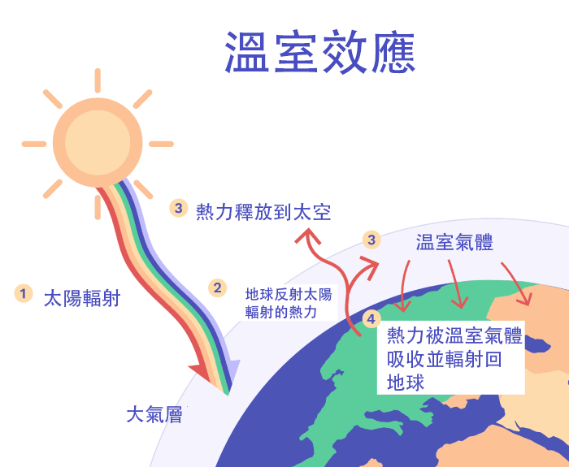
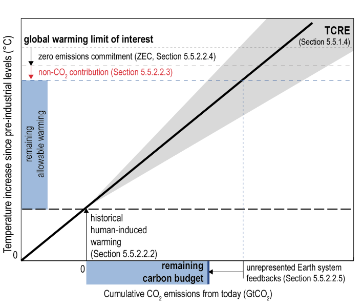
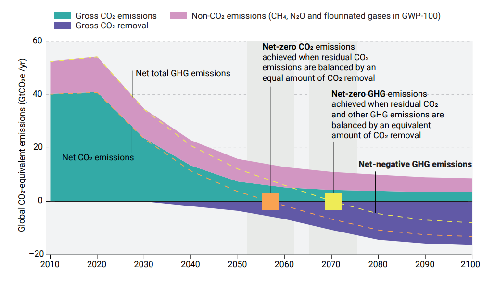
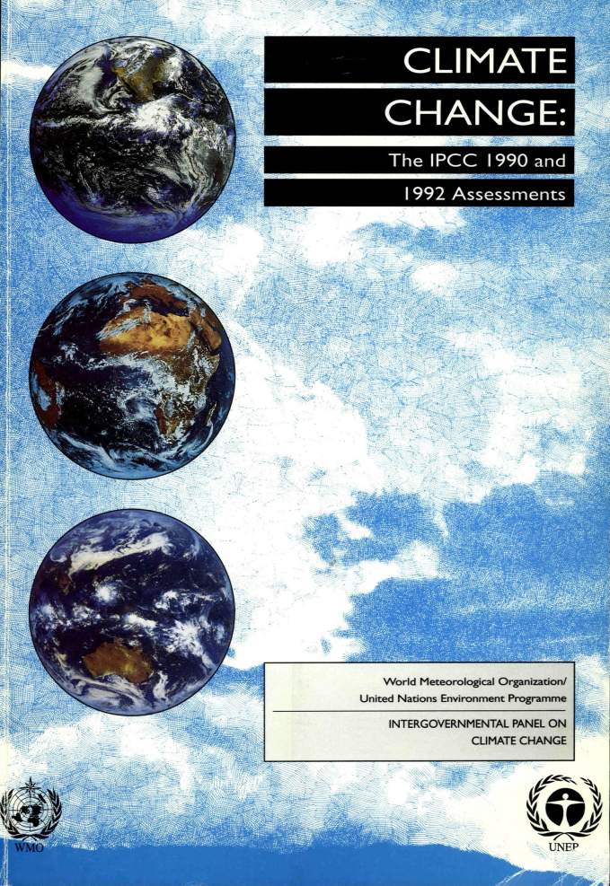
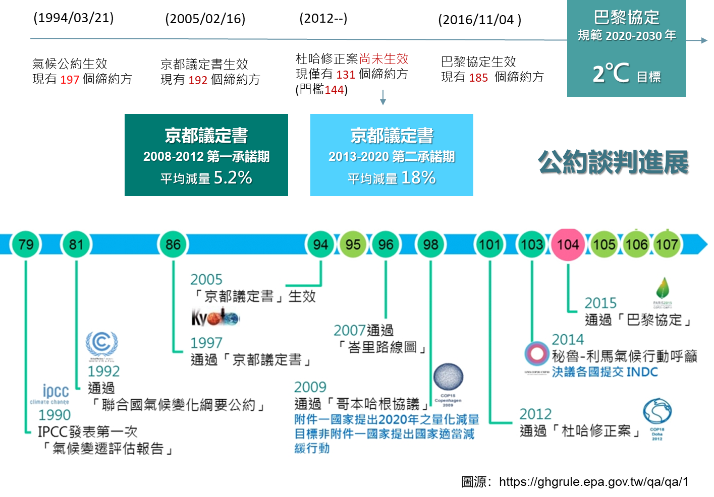
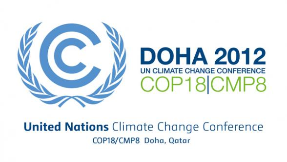
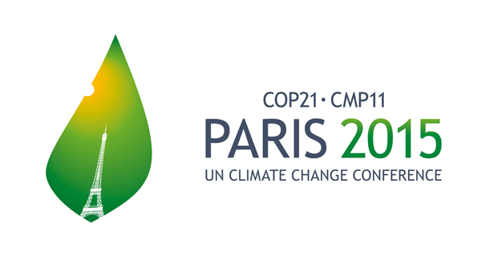
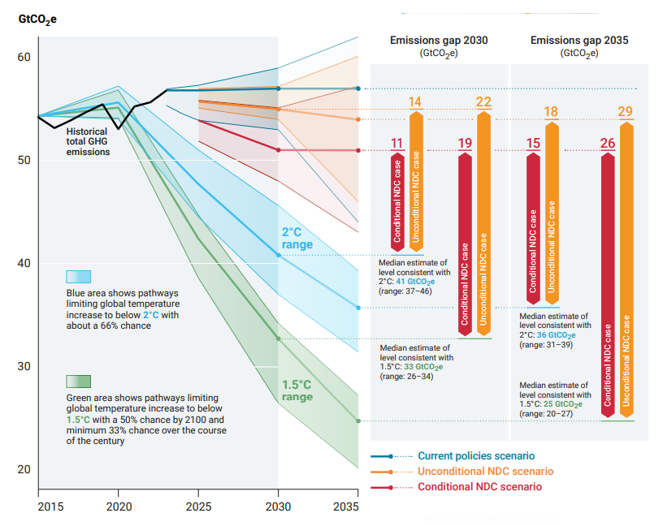
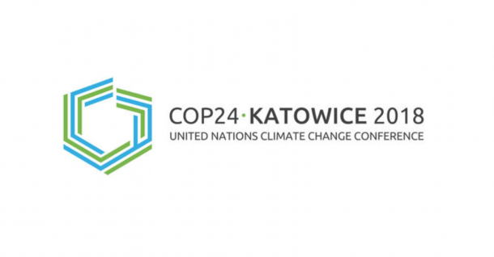
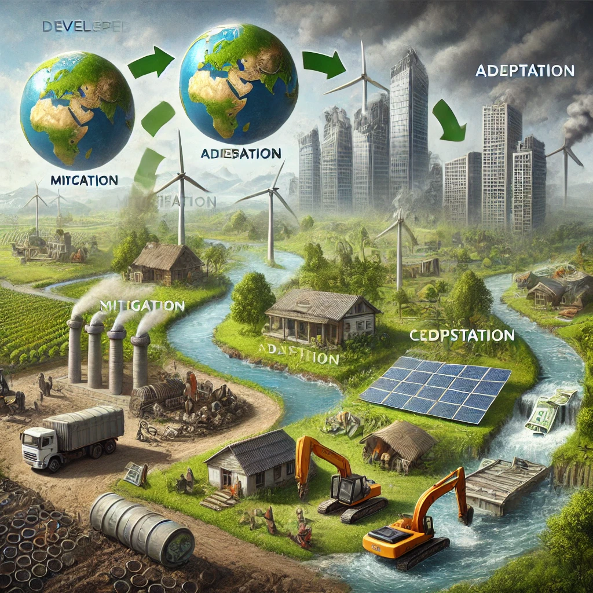
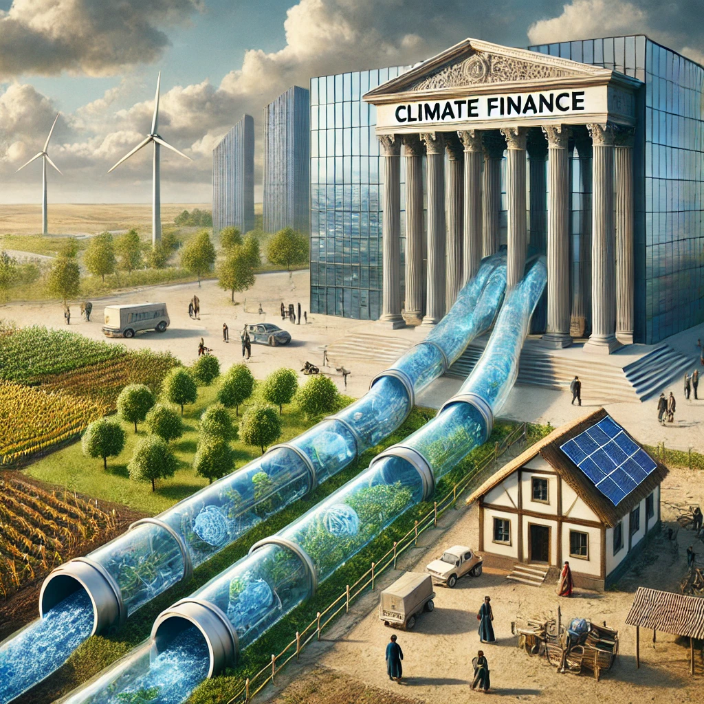
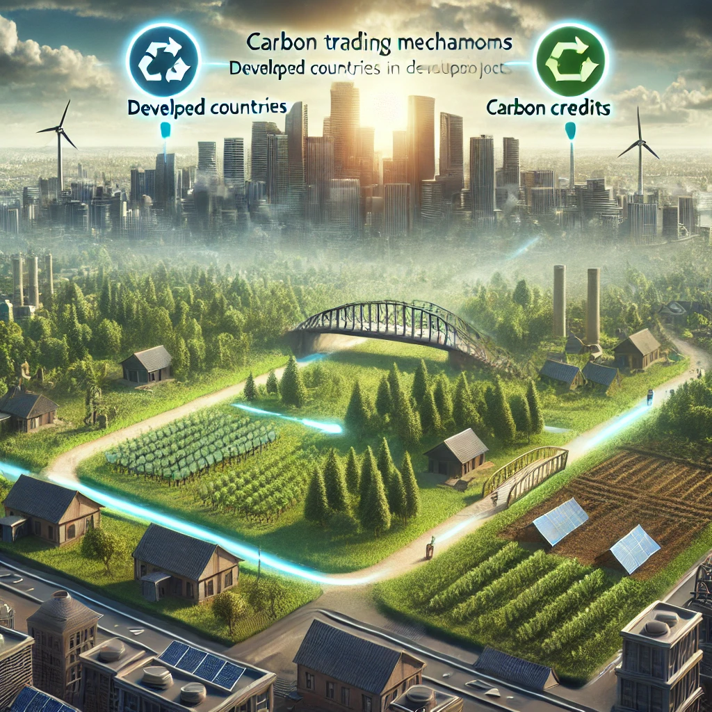
| 特點 | 說明 |
|---|---|
| 減量成效確定性 | 排放總量由Cap提供確定性，符合碳預算目標 |
| 成本有效性 | 行業間/行業內可通過交易實現成本有效 |
| 管理複雜度 | 較碳稅複雜，需建立二級市場，對主管機構和廠商都有額外挑戰 |
| 碳價可預測性 | 碳價由市場決定，會隨經濟狀況波動 |
- 決定管制對象（覆蓋範圍）：考量排放占比（抓大放小）、減量措施可行性、監管成本。
- 設定減量目標：由上而下（Top-down）或由下而上（Bottom-up）。
- 設定排放上限（Cap）：綜合考量排放趨勢與減量潛力。
- 排放配額分配方式：拍賣法（Auctioning）；歷史溯往法（Grandfathering）；基準法（Benchmarking）。
- 排放額度交易（Market Operation）
- 遵約與履約
- 彈性機制（包括跨期儲存使用、碳信用抵換）
- 市場連結
- 2005年啟動，全球最大的強制性碳排放交易體系。
- 覆蓋歐盟約 40% 的溫室氣體排放量。
- 管制氣體：CO₂、N₂O、PFC。
- 2030年短期目標：較2005年排放量減少61%。
| 階段 | 時間 | 重點 |
|---|---|---|
| 第一階段 | 2005-2007 | 試驗階段 |
| 第二階段 | 2008-2012 | 與京都議定書第一承諾期對接 |
| 第三階段 | 2013-2020 | 統一排放上限、拍賣為主要分配方式 |
| 第四階段 | 2021-2030 | 收緊上限、CBAM、2027年引入ETS 2（住商、運輸） |
碳稅邏輯：對生產造成的排放徵稅（= 外部成本），使生產者面對完整的社會成本，引導至社會最適產量。
最適稅率 = 社會最適產量下的外部邊際成本
| 面向 | 排放交易（ETS） | 碳稅/費 |
|---|---|---|
| 確定性 | 排放量確定，碳價不確定 | 碳價確定，排放量不確定 |
| 成本有效性 | 跨廠商交易可實現效率 | 統一費率激勵低成本減量 |
| 管理複雜度 | 較高 | 較低 |
| 適用行業 | 大型排放源 | 可較廣泛覆蓋 |
- 全球實施碳稅費的國家：阿根廷、智利、哥倫比亞、新加坡、南非等。
- 台灣碳費制度正在推動中（初期費率設定為關鍵議題）。
| 國家 | 制度 | 說明 |
|---|---|---|
| 日本 | 化石燃料碳稅 | 全球首個對化石燃料徵收碳稅的國家之一，地方（東京）亦有碳交易機制 |
| 新加坡 | Carbon Tax | 2019年開徵，2024年費率逐步調升 |
| 台灣 | 碳費 | 依《氣候變遷因應法》開徵，適用年排放量達2.5萬噸CO₂e以上的工廠 |

全球採用ICP的企業：2014年約150家 → 2023年已逾1,400家；台灣2023年已逾63家。
- 投資人壓力：CDP 氣候變遷問卷要求揭露ICP使用情況。
- 法遵壓力：年報應揭露氣候相關財務資訊（TCFD框架）。
- 自主減碳：強化內部減碳決策、管理氣候相關風險。
| 形式 | 說明 | 適用階段 |
|---|---|---|
| 隱含價格（Implicit Price） | 用過去實際減量投資與減碳量比較，設定碳價作為投資決策依據 | 前中期 |
| 影子價格（Shadow Price） | 在投資決策（IRR、NPV）中，納入排碳/減碳量 × 內部碳價格為成本/收入 | 前中期 |
| 排放抵換（Carbon Offset） | 比較自行減量成本與購買碳信用成本，選擇較低者 | 前中期 |
| 內部碳費（Internal Carbon Fee） | 各事業單位依排放量繳納費用至企業內部「減碳基金」 | 中後期 |
| 內部碳交易（Internal Trading） | 企業內部實施類似ETS的排放許可制度，各部門間交易許可 | 中後期 |
| 企業類型 | 代表企業 | 碳價水準 | 主要用途 |
|---|---|---|---|
| 半導體 | 台積電、聯電 | 50 USD/t | 減排措施評估 |
| 電子零組件 | 華碩 | 44 USD/t | 產品生命週期成本計算、供應鏈管理 |
| 電子製造 | 台達電、光寶、友達等 | 1-300 USD/t | 投資減碳技術和再生能源 |
- 海洋佔地球表面積約 71%，為超過 30 億人提供糧食安全與 80% 的貨物運輸，海底電纜串連國際 98% 的網路。
- 全球海洋經濟從 1995 年的 1.3 兆美元成長至 2020 年的 2.6 兆美元（成長 2.5 倍），約佔全球 GDP 3-4%；其中超過 75% 的成長仰賴亞太地區，東亞佔全球海洋經濟成長的 56%（OECD, 2024）。
- 全球約 75% 陸域與 66% 海域已受人為影響：約 50% 鹽沼、35% 紅樹林、29% 海草、30% 珊瑚礁已退化或消失。
- 聯合國永續發展大會於 2011 年提出藍色經濟（Blue Economy）作為改善海洋永續之途徑，2014 年發布 Blue Economy Concept Paper。
- 海洋委員會於 2018 年 4 月 28 日成立；《海洋基本法》2019 年公布；《海洋產業發展條例》2023 年三讀通過、2024 年 1 月施行。
- 《海洋基本法》第 2 條定義海洋產業：「利用海洋資源與空間進行各項生產及服務活動，或其他與海洋資源相關之產業」。
- 《海洋產業發展條例》劃分四大領域、16 項產業項目：能源及非生物資源、航運遊憩及運動、水產及生物科技、海事工程及環境資訊。
- 產值：2018 年 7,507 億元 → 2022 年 1 兆 7,031 億元（佔 GDP 7.86%）→ 2023 年 1 兆 2,059 億元（佔 GDP 5.4%）。
| 2023 年四大支柱 | 產值（新臺幣） | 說明 |
|---|---|---|
| 海洋運輸及輔助 | 4,763 億元 | 長榮、陽明、萬海等；逾 90% 進出口貨物依賴海運 |
| 海洋漁業與養殖 | 3,297 億元 | 遠洋漁業全球領先；養殖具人工繁殖與飼料技術 |
| 海洋遊憩 | 2,445 億元 | 濱海旅遊、海上運動、郵輪 |
| 遊艇及其他船舶載具 | 693 億元 | 大型遊艇訂單總長度曾居全球第 4 |
- 歐盟：2022 年藍色經濟產值達 8,906 億歐元、近 482 萬個就業機會（佔總就業 2.4%），沿海觀光業貢獻 53% 就業。2025 年 6 月推出《歐洲海洋公約》（European Ocean Pact）。
- 美國：2008-2020 年以總產值計為全球最大海洋經濟體（挪威為佔比最高）。NOAA 2023 年定義藍色經濟為「以永續、公平和社會包容的方式利用海洋和五大湖資源」。2022 年海洋經濟產值 4,762 億美元（佔 GDP 1.8%、近 240 萬個就業），以海洋休閒觀光 2,197 億美元最高。
2. 社會上（Equity）是可接受的
3. 環境上（Environmental）是和諧的
- RISC 評估框架：OECD 為確保藍色經濟永續發展，構建城市和地區具有韌性（Resilient）、包容性（Inclusive）、永續性（Sustainable）和循環性（Circular）的藍色經濟評估框架，已蒐集 80 多個城市、地區、流域組織與小島嶼發展中國家（SIDS）的評估結果。
- 社會-生態系統（SESs）：Ostrom（2009）提出，透過鏈結自然與社會科學，促成社會與生態系統朝永續發展。
- 里海（satoumi）：Yanagi（1998）定義為「經由人為的操作或人與自然的互動而使其生產力及生物多樣性均能提高的沿岸海域」，強調人類與海洋共存共生。國內案例：新北卯澳、宜蘭東澳、桃園海岸、台江國家公園。
② 海洋基本法何年公布？（2019）
③ 海洋產業發展條例何時開始實施？（2024 年 1 月）
④ 何部法令第二條定義我國海洋產業？（海洋基本法）
⑤ 我國海洋產業可分為幾大領域與幾個項目？（四大領域 16 項）
⑥ 產值最高的產業項目為何？（海洋運輸及輔助）
⑦ 何謂藍色經濟的 3E 原則？ ⑧ 何謂 RISC 評估框架？ ⑨ 請說明里海（satoumi）的定義？
- MSP（Marine Spatial Planning）：分析與分配人類活動在海域之空間與時間分布的公共過程，以達成生態、經濟與社會目標。
- MSP 應整合進既有的國土空間規劃體系，達成陸海一體（land-sea continuum）的和諧永續發展。
- MSP 可減少使用衝突、降低環境影響、促進相容使用、保存關鍵生態系統服務。
- 《海岸管理法》：「海岸地區」包含近岸海域（三海浬內）。
- 《國土計畫法》：「海洋資源地區」定義為「內水與領海」。
- 爭點：三海浬到 12 海浬之間如何管理？陸海整合不足、權責機關分散（行政院、內政部、財政部、海巡署）。
- 法制演進：濕地保育法（102）→ 海岸管理法（104）→ 國土計畫法（105）→ 海洋基本法（108）→ 海洋產業發展條例、海域管理法、海洋保育法（草案）。
- 發展原則：先陸域後離岸、先示範後開發、先淺海後深海。
- 目標：2025 年完成離岸 3GW 示範裝置容量；陸域 1.2GW。
- 第三階段區塊開發（2021/5/11 公布草案）：2026~2035 年十年共釋出 15GW（2026-2031 釋出 9GW、2032-2035 釋出 6GW），每年釋出 1.5GW。
- 招商採「先資格審查、後價格評比」：須取得環評初審建議通過、經濟部場址規劃備查、台電併聯審查意見書。
- 《環境影響評估法》1994 年 12 月公布：對開發行為或政府政策之環境影響，事前以科學、客觀、綜合之調查、預測、分析及評定，提出環境管理計畫並公開說明及審查。
- 程序：第一階段環評 → （有重大影響之虞）第二階段環評 → 審查 → 追蹤考核。
- 並非所有開發行為都須環評，僅「特定開發行為」（如位於國家公園、野生動物重要棲息環境、一定開發面積以上等）。
- 政策環評：工業、礦業、水利、土地使用、能源、畜牧、交通、廢棄物處理、放射性核廢料等政策有影響環境之虞者。
- 相關計畫的協調：不同使用方式的衝突、新舊工業區競合、區域水資源、公共設施支援配合。
- 總量管制：引進廠房／人員規模、廢汙排放量與區位、鄰近開發的加乘效果。
- 地區特性掌握：濱海陸地（風速大、沙石多）；海域（海流、漂沙、突堤效應）。
- （填海）抽沙與取土：影響海底地形、海岸地貌；擾動底泥影響漁業資源。
- 土地／區域使用規劃：基地配置、環保設施、對區域與利益關係人的影響。
- 已送環評審查的離岸風力開發計畫共 28 件，其中 20 件位在彰化外海。
- 漁業衝突：漁業補償、捕獲量低報、電力開發協助金、漁民意見納入、替代工作機會（巡護船、調查船）、箱網養殖。
- 生態調查：海洋大學歐慶賢與邵廣昭教授調查發現，離岸風機具人工魚礁的聚魚效果（柱體附著藤壺、軟珊瑚等底棲生物）。
- 水下文化資產：開發前應依《水域開發利用前水下文化資產調查及處理辦法》送審調查計畫（範圍含周緣外延至少 500 公尺）。
- 環評監督挑戰：「沒船、沒錢、沒人、沒專業」——監測由開發商執行、監督靠環保署、船靠海巡署、鯨豚追蹤靠海保署；環評承諾比制度上路早（鯨豚觀察員、水下噪音監測）。
- 1970 年代能源危機、國際局勢艱困（退出聯合國、美國轉向），政府全力突圍。
- 決策考量：磷蝦是極好的蛋白質糧食；南極漁場尚無主權歸屬。
- 決策：行政院長蔣經國先生；執行：台灣省水產試驗所鄧火土所長。
- 艉拖式試驗船，隸屬水產試驗所，黃正清教授設計、豐國造船廠承造。
- 總噸位 711.5、滿載量 150 噸；船名象徵「馬到成功」；1975 年 7 月 12 日下水。
- 南極距台北約 12,790 公里，年平均氣溫 −36°C，進入南極圈須通過三個暴風圈（咆哮 40°、狂暴 50°、尖叫 60°）。
- 磷蝦（Krill）：節足動物，夜間發磷光；以南冰洋水溫 0°C 上下水域密度最大；是鯨魚主食，形成世界最短的食物鏈：植物性浮游生物 → 南極蝦 → 鬚鯨類。
- 資源量極大（FAO 2006 估計總量 1.25~7.25 億噸），資源恢復力極強；可製成蝦乾、蝦蛋白、蝦油、釣餌、飼料等。
- 任務：探勘開發南極蝦漁場、漁具漁法研發試驗、南極蝦加工試驗、南冰洋生態與資源調查。
- 1977 年 3 月 27 日返抵基隆港，歷時 114 天，全程 1 萬 9 千餘浬。
- 海功精神象徵臺灣海洋開拓的冒險、進取精神，啟發海洋教育與海洋興國的時代意義。
① 中東爆發戰爭，導致石油供給減少。
② 金融風暴消弭了家計單位的儲蓄與財富。
③ 政府對汽車所有人課徵二氧化碳排放稅。
④ 人們預期明年汽車降價。
⑤ 汽車製造商倒閉。
⑥ 廣告競爭增加了摩托車族群的人口。
- 下列何項因素不會導致橘子需求曲線的移動？(A) 家計單位所得增加 (B) 橘子價格變動 (C) 橘子的購買人數增加 (D) 蘋果的價格變動（橘子的替代品）
- 下列何項敘述可以說明供給法則：在其他條件不變下，價格上漲則____。(A) 供給量增加 (B) 生產過程中替代品的供給減少 (C) 供給增加 (D) 生產過程中互補品的供給減少
- 在漢堡市場上，下列何者降低漢堡的需求？(A) 製作漢堡的麵包價格上漲 (B) 薯條的價格上漲 (C) 漢堡店的店租上漲 (D) 家計單位所得增加
- 在筆記型電腦市場上，下列何者降低筆記型電腦的供給？(A) 桌上型電腦的價格降低（生產過程中的替代品） (B) 預期筆記型電腦未來的價格下降 (C) 對電子產品加稅 (D) 筆記型電腦內建的晶片價格上漲
- 金融危機導致美國的家計單位儲蓄減少、失業率上升，則汽車市場的均衡價格____，汽車市場的均衡數量____。(A) 上漲；增加 (B) 上漲；減少 (C) 下降；增加 (D) 下降；減少
- 石油供給減少、需求維持不變，則今日油價會造成____，但價格會逐漸____。(A) 過剩；下降 (B) 短缺；下降 (C) 過剩；上漲 (D) 短缺；上漲
- 現在很多美國人賣掉原本的車而改買新的節能汽車，其他條件不變下，對二手車市場的影響為____，對節能汽車市場的影響為____。(A) 供給增加且價格下跌；需求增加且價格上漲 (B) 需求減少且價格上漲；供給增加且價格下跌 (C) 需求及供給均減少，價格變化不一定；需求增加且價格上漲 (D) 需求減少、供給增加且價格下跌；供給增加且價格下跌
| 方法 | 類型 | 可估使用價值 | 可估非使用價值 |
|---|---|---|---|
| 市場價值法 | 直接市場 | ✓ | ✗ |
| 旅行成本法（TCM） | 替代市場 | ✓ | ✗ |
| 特徵資產價值法（HPVM） | 替代市場 | ✓ | ✗ |
| 特徵工資法（HWM） | 替代市場 | ✓ | ✗ |
| 趨避行為法（ABM） | 替代市場 | ✓ | ✗ |
| 劑量反應函數法（DRF） | 替代市場 | ✓ | ✗ |
| 條件評估法（CVM） | 假設市場 | ✓ | ✓ |
| 效益移轉法（BT） | 引用既有研究 | ✓ | ✓ |
| 公式名稱 | 公式 |
|---|---|
| 經濟利潤 | 總收入 − 機會成本（顯性+隱性成本） |
| 短期總成本 | TC = TFC + TVC |
| 平均總成本 | ATC = AFC + AVC = TC/Q |
| 污染防制年總成本 | 年防治資本成本 + 年防治變動成本 |
| 淨效益現值 | NPV = Σ [(Bt − Ct) / (1+r)ᵗ] |
| 統計生命的價值 | VSL = WTP / ΔD |
| 特徵價格函數 | Ph = f(S, N, Q) |
| 旅遊需求函數 | R = f(Pr, M, Q) |
| 工具 | 確定排放量 | 確定碳價 | 適用對象 | 台灣現況 |
|---|---|---|---|---|
| ETS（排放交易） | ✓ | ✗ | 大型排放源 | 法有授權，未執行 |
| 碳稅/費 | ✗ | ✓ | 廣泛 | 正在推動 |
| 碳信用抵換 | 部分 | ✗ | 自願性 | 現行主要工具 |
| 內部碳定價 | ✗ | ✓ | 企業自主 | 63+家企業採用 |